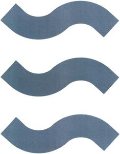

Trade Mark Journal No.2025/015 11 April 2025
WO0000001830477 (7,11,35,37,40,42)
Office of origin: Germany
Date of International Registration:12 June 2024
Date of designation in the UK:
12 June 2024

The mark contains the colours white and blue.
International priority date claimed: 13 December 2023
(Germany)
- Class 7
- Drilling tools (machine parts) and drilling machines for making boreholes, in particular for drilling wells in the ground; accessories for the aforesaid goods, to the extent included in this Class; steam/oil separators, oil filters, hydraulic oil filters, oil filters [machine parts], pumps [parts of machines, engines and motors].
- Class 11
- Apparatus and installations for the conveyance, treatment, conditioning and purification of water included in this Class, in particular flocculation and precipitation plants and apparatus, activated carbon filters, gravel filters, absorption and absorption plants and apparatus (term considered too vague by the International Bureau pursuant to the Rule 13 (2) (b) of the Regulations), deicing and demanganization plants and apparatus, ion exchange installations, sour water strippers, heat pumps.
- Class 35
- Wholesale and retail services connected with the sale of groundwater heat pumps, coaxial probes, geothermal probes, standpipes for deep geothermal energy, geothermal plants and parts thereof, groundwater heat pumps and parts thereof, water treatment plants and parts thereof, pumps and parts thereof.
- Class 37
- Construction work for dewatering in civil engineering, and included in this Class, in particular lowering of groundwater and landfill degassing by pumping and excavation of shafts and trenches and soil vapor extraction; sealing work, well construction, well dismantling work, well rehabilitation, well maintenance; disinfection of wells and other installations; carrying out explosive ordnance detection drillings; drilling soil borings, in particular as exploratory drillings, test drillings, investigation drillings, exploratory drillings, storage drillings, sinking drillings, core drillings, subsoil investigation drillings and production drillings; pump repair service, installation and rental of pumps as emergency units; cleaning and maintenance of pumps and risers; construction work for trenchless pipe jacking; construction work for milling sealing walls and cable protection pipes into soils; installation of conveyor systems with switching and control equipment; construction work, in particular construction management; repair work, namely in the field of solar systems, photovoltaic systems, data technology systems (hardware) for the field of solar system technology; installation and maintenance of photovoltaic systems and geothermal systems; fault clearance in electrical solar systems.
- Class 40
- Processing of materials for dewatering in construction, as far as included in this class, in particular purification of groundwater, landfill and exhaust gases.
- Class 42
- Technical consulting, planning and documentation [for research purposes] in civil engineering, well construction and environmental engineering; carrying out leak tests, technical surveys for wells, technical monitoring measures, well inspections, development of customized remediation concepts in the field of well construction, carrying out and evaluating pump tests; soil permeability and soil load capacity tests, preparation of technical expert reports.
Hölscher Wasserbau GmbH
Representative: Paul & Albrecht Patentanwälte PartG mbB, Stresemannallee 4b, 41460 Neuss, GERMANY